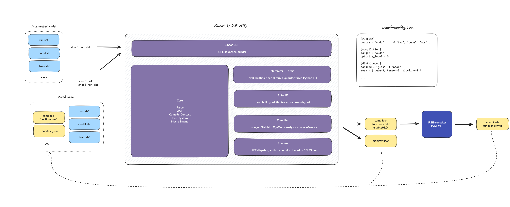

A Single Binary ML Framework
Mar 1st 2026
The first article outlined a fairly ambitious V2 architecture for Sheaf: several shared libraries, an external IREE runtime, and Enzyme-MLIR for autodiff. The whole SDK weighed around 300MB. Over the past few weeks, as the pieces came together, that plan changed considerably. What emerged is simpler and, in hindsight, more honest about what the project actually needs at this stage.
This article describes the simplifications to the current architecture, to the AOT build system, and the autodiff debugging that preceded it all.
A revised architecture
Article 1 described a V2 architecture split into sheaf-parser.so,
sheaf-interpreter.so, a separate sheaf-compiler.so, and an external IREE
runtime. The autodiff was handled by Enzyme-MLIR as a large 80MB LLVM plugin.
That plan did not survive contact with reality. Enzyme turned out to be overkill, and was eventually dropped in favor of a simpler symbolic autodiff engine described in article 3. It also appeared that the separate components were small enough to be merged into a single monolithic binary, with the IREE runtime statically linked.
Sheaf thus moved to the Go approach: a single binary for everything. Or more exactly: a single binary, yet clusterable, ML framework.

sheaf contains everything: parser, JIT compiler, autodiff engine, interpreter,
special forms, and the IREE runtime for VMFB execution. It comes to about 2.5MB,
which makes it easy to deploy at scale.
The only remaining external tool is the heavy iree-compile, invoked by the JIT
(formely sheaf build) to lower StableHLO to VMFB. It is part of the IREE SDK
and only needed at build time, not at runtime. A deployed Sheaf program consists
of the lightweight sheaf binary, .shf source files, and optional .vmfb
artifacts.
This simplicity is partly a reaction to what ML toolchains tend to become: layered dependency trees of CUDA, cuDNN, Python packages, and C++ shared libraries with their own version conflicts. Whether it will hold as the project grows is an open question, but for now, a single binary feels like the right starting point.
Reducing friction
With a single binary came a practical question: how do you compile an entire model? The previous workflow was impractical. All pure functions (those without side-effects) had to be grouped in a separate file, and their shapes annotated. For a project with ten functions across three files, this meant a lot of refactoring, each with manual type annotations.
Thus, the JIT was rewritten to compile everything at once without the need for
manual intervention. Given a folder of .shf files, it:
- Collects all
.shffiles - Filters out impure functions (anything calling
print,random-*,io) with a warning, and selects all functions that can be compiled AOT - Parses and compiles them into a single compiler context (resolving
(use ...)across files) - Infers types from either a runner script (
--trace-with), manual config (--config), or adefparamsform - Emits a single StableHLO module containing all pure functions
- Compiles it to one
.vmfbviairee-compile - Writes a
manifest.jsonalongside the artifact
Step 2 deserves a note. Functions with side effects cannot be compiled ahead-of-time as they depend on runtime state. Rather than failing, the compiler skips them and lets the interpreter handle them at runtime. This is the dual-mode architecture described in article 1: compiled code for pure computation, interpreted code for orchestration.
The manifest
Transparent dispatch introduces a subtle problem: if a user modifies a function's source but forgets to recompile, the runtime would silently keep dispatching the old compiled version. The code has changed, yet the behavior hasn't. This is the kind of issue that can waste hours of debugging.
The manifest.json file exists to prevent this. It records what was compiled,
with enough information for the runtime to detect stale artifacts and fall back
to interpretation when needed:
{
"_comment": "Sheaf build manifest — generated by sheaf build, do not edit",
"version": 1,
"vmfb": "compiled-functions.vmfb",
"functions": {
"forward": {
"hash": "a3f1c0b7e2d94815",
"params": {
"x": "tensor<4x2xf32>",
"params": "tuple<tensor<2x8xf32>, tensor<8xf32>, tensor<8x1xf32>, tensor<1xf32>>"
},
"returns": "tensor<4x1xf32>"
},
"loss": {
"hash": "e7b2d1f809ca3267",
"params": {
"x": "tensor<4x2xf32>",
"y": "tensor<4x1xf32>",
"params": "tuple<tensor<2x8xf32>, tensor<8xf32>, tensor<8x1xf32>, tensor<1xf32>>"
},
"returns": "tensor<f32>"
}
}
}
Each function entry contains:
hash: a content hash of the function body's AST. If the source changes, the hash changes, and the runtime knows the VMFB is stale.params: parameter names mapped to their MLIR types, preserving call-site order.returns: the MLIR return type.
The hash is computed from the AST's Display representation, which excludes
source locations. Reformatting code or adding comments does not invalidate the
compiled artifact; only semantic changes do.
Transparent dispatch
When the interpreter encounters (use math), it resolves the module, parses and
compiles it as usual, then checks for a companion manifest.json in the same
directory. If found, and if all hashes match, it loads the .vmfb and tags each
compiled function with a session index.
At call time, the interpreter checks whether the function has an associated VMFB session. If so, it marshals the arguments, calls IREE, and unmarshals the result. Otherwise, it interprets normally.
(use math) ;; loads math.shf, finds manifest.json + compiled-functions.vmfb
(forward x params) ;; pure, compiled -> dispatched to IREE
(print loss) ;; side effect -> interpreted
From the caller's perspective, nothing changes. The boundary between compiled and interpreted code is determined at build time, and the runtime respects it quietly.
Debugging the autodiff
None of the above would have worked without first fixing the autodiff engine. In the previous article, the symbolic autodiff was validated on a simple XOR network. The natural next step was to run it on Hydra, Sheaf's growing neural network example, which is slightly more complex than the XOR MLP. Unfortunately, this didn't go so well.
The XOR network is a 2-layer MLP with fixed topology. Hydra is a different kind of problem: it starts small and grows new layers during training. After growth, the parameter tree changes shape, new weights appear, and the autodiff engine must handle all of them correctly.
The first run after growth crashed immediately:
Error: Undefined symbol: h_in
This turned out to be the first of several issues, uncovered over a few days of debugging with AI assistance, that pointed to something deeper in the way the symbolic engine and the interpreter were interacting.
The tracer evaluates a function symbolically: it replaces concrete tensor operations with symbolic nodes, then differentiates the resulting expression. The first problem was that the tracer was keeping internal names alive longer than it should have.
When Sheaf evaluates (reduce f init coll), f is a lambda like
(fn [acc x] ...). The tracer would record Symbol("acc") and Symbol("x") in
the traced expression. Later, when the autodiff engine tried to differentiate,
these symbols had no binding: they were internal to the lambda, not part of the
function's parameter space.
A related issue appeared in the threading macro as->, which generates nested
Let bindings where the same symbol is rebound at each step:
Let { h = input,
Let { h = layer1(h),
Let { h = layer2(h),
body }}}
When substitute_bindings processed these in order, the first substitution
replaced h in the body, and subsequent ones found nothing left to substitute.
The gradient of the head layer was always zero. The root cause was the same in
both cases: the traced expression contained scoping constructs that the autodiff
engine had no way to resolve.
The fix required rewriting the tracer. Instead of emitting Let bindings that
preserved internal names, the new version uses a flat environment (SymEnv)
that inlines everything eagerly. When it encounters Symbol("acc"), it replaces
it immediately with the traced expression it refers to. The output is a single
expression tree with no internal names , only FunctionCall nodes and
references to the original parameters.
This turned out to be the right abstraction: producing expressions that are entirely self-contained, with no scoping or shadowing left for downstream passes to worry about. Both bugs disappeared as a consequence.
A third issue was more "mechanical". In a linear layer (+ (matmul x W) b), the
bias b has shape [1] but gets broadcast to [4, 1] during addition (where 4
is the batch size). The gradient flows back with shape [4, 1], but the
parameter has shape [1]. StableHLO's broadcast_in_dim stretches dimensions
silently, and the gradient engine must undo this.
The solution is a standard technique in autodiff: reduce_grad_to_param_shape()
compares the gradient shape to the parameter shape, identifies which dimensions
were broadcast (where the parameter had size 1 or was missing), and reduces
along those axes. It had to be implemented explicitly here because the symbolic
engine operates before StableHLO emission, at a stage where shape information is
still available.
Results
After these fixes, the test suite passes:
| Test case | Status |
|---|---|
Scalar (* x x) at x=3 |
[9.0, 6.0] (correct) |
| Single-layer network | Gradients match finite differences |
| XOR MLP (2->8->1) | Converges in 100 epochs |
| Hydra post-growth | Loss < 0.01, training succeeds |
Hydra now completes in about 0.73 seconds, down from 1.46s in V1. The difference comes from removing interpreter overhead: V1 called JAX repeatedly from the Python event loop, while V2 evaluates the symbolic gradient expression directly. This is reminiscent of the sharp 51x speedup I experienced with the MLP.
What's next
The flat tracer, content-hash manifests, and transparent dispatch form a
coherent enough system: write Sheaf code, run sheaf build, and the runtime
uses compiled artifacts where it can. The boundary between interpreted and
compiled code is determined by the compiler, not by the programmer.
The next step is to run the full standard library and example suite end-to-end.
After that, the major step will be the introduction of all-reduce with NCCL,
for Sheaf V2.1 or V2.2. This will most likely be the subject of the next
article.